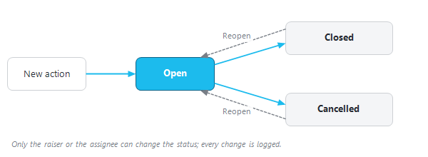

|
Action Tracker — the asset's shared action log
1. Overview
The Action Tracker is a shared log of the actions raised on an asset, for example "re-test P-04 after the choke change" or "check the gas-lift valve of P-07". Each action has a topic, an owner, a priority, an optional due date and a thread of updates with attachments. Every user of the asset sees the same log, so surveillance findings are followed up in one place rather than in e-mails.
Actions are kept per asset. An action is attached to a well, or to the asset as a whole ("(Asset level)").
2. Opening it
•In the Field Monitoring window, click "Actions Tracker". When some of your actions have unread updates, the button shows how many, e.g. "Actions Tracker (2)".
•When the Field Monitoring window opens, a pop-up lists your actions that have updates or are overdue. Click it to open the tracker. The count on the button is refreshed every few minutes.
•In the producer and injector monitoring windows, the well's status card shows its ongoing actions. Click "Ongoing action" to open the tracker filtered on that well, or click one action to open it alone in a small "Action" window.
3. The window
•Counters at the top: "open", "overdue", "assigned to me", "closed last 30 d".
•Filters on the left: "Search" (keywords, well, user…), "Status" ("Open", "Closed", "Cancelled"), "Only my actions (raiser / assignee / participant)", "Category" and "Well" (each with "All").
•The list of actions, as cards. Open actions come first, then the most recently raised. High-priority and overdue actions are highlighted, and actions with unread updates are marked.
•The detail of the selected action: topic, description, the facts (Well, Raised by, Category, Assigned to, Priority, Due, Raised, Participants) and the thread of updates.
Clicking an action marks its updates as read. Selecting it automatically, for example after a filter change, does not.
4. Raising an action
1.Click "New action" on the ribbon.
2.In the "New action" window, choose the "Well", or "(Asset level)". Type the "Topic" (a short title; it is required) and optionally a "Description".
3.Choose the "Category" (the list is set up for your asset), the "Priority" ("High", "Medium" or "Low"; "Medium" by default), who it is "Assigned to", and an optional "Due date".
4.Tick the "Participants" — users who should follow the action.
5.Optionally write a "First comment" (details, context, what is needed), then click "Create".
5. Following up
5.1 Posting updates and files
•Type in "add an update ..." and click "Post".
•To attach files, click "Attach". The files wait under the text box ("✕ remove files" drops them) and are posted with your next "Post". Allowed types: PNG, JPG, Excel (.xlsx, .xls), CSV, PDF, Word (.docx) and text files, up to 10 MB each.
•Right-click an attachment in the thread to "Open" it, "Save as ..." or "Remove" it. Only the person who uploaded a file can remove it. "Copy thread text" copies the whole thread.
Updates can only be posted to an open action. Reopen a closed or cancelled action first.
5.2 Editing, closing and reopening
|
Button
|
What it does
|
Who
|
|
"Edit"
|
Change the topic, description, category, priority, due date, assignee and participants. The well cannot be changed: cancel the action and raise a new one instead.
|
The raiser or the current assignee, while the action is open.
|
|
"Close action"
|
Sets the status to Closed.
|
The raiser or the current assignee.
|
|
"Cancel action"
|
Sets the status to Cancelled, after confirmation. The action stays in the log.
|
The raiser or the current assignee.
|
|
"Reopen"
|
Sets a closed or cancelled action back to Open.
|
The raiser or the current assignee.
|
Every change (edit, status, assignment, participants) is written into the thread as a short audit line, so the history of the action is never lost. Actions are never deleted.

Figure 1 — Status of an action: Open, Closed or Cancelled.
6. Good practice
•Raise the action on the well concerned, so that it appears on that well's status card in monitoring.
•Give a due date when there is one: overdue actions are counted and flagged to their owners.
•Close the action with a final update that states the outcome.
See also Monitoring.
|